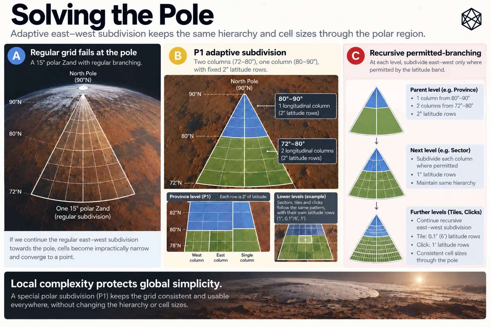

Where the Grid Bends
Adaptive Geometry Above 72°
For most of Mars, GRID gets to be boring.
That is a compliment. Below 72°, the same fixed subdivision rules can carry a location from Zand to Province, Sector, Tile and Click. The arithmetic is straightforward, the containment obvious and the geometry easy to reconstruct.
At the chosen 72° transition, GRID changes behaviour.
Chapter 8 already established why fixed longitude subdivision becomes a poor operating geometry towards a pole. We do not need to prove that again. The engineering question now is narrower: how do we preserve useful physical scale without throwing away the hierarchy that works across the rest of Mars?
GRID’s answer is Polar Rule P1.
Its governing idea is simpler than its implementation:
Keep the north–south scale. Reduce the east–west branching.
A polar Province remains 2° high. A Sector remains 1° high. A Tile remains 0.1°, or 6 arcminutes, high. A Click remains 1 arcminute high.
What changes is the number of children created across longitude.
That is enough to bend GRID around the poles.
Change only what failed
P1 starts with a deliberately conservative judgement.
The hierarchy is not broken. Latitude is not broken. The angular coordinate language is not broken. The part producing the wrong operating result is the fixed number of longitude subdivisions.
So that is the part P1 changes.
A more radical design could replace the polar caps with a specialist projection, equal-area system or separate tessellation. That might produce cleaner polar geometry for particular analytical purposes, but it would also force the civil geography to change character at 72°.
GRID does not need that.
A polar Click can still sit inside a Tile, inside a Sector, Province, Zand and Quad. The same canonical hierarchy remains:
Quad → Zand → Province → Sector → Tile → Click
Only the branching within that hierarchy adapts.
This is the first important property of P1: it solves a local geometric problem without exporting a new spatial language across the rest of the system.
One polar Zand

Read a description of this illustration
P1 varies east–west child counts across rows in the polar cap, while preserving the north–south angular progression and parent–child nesting. It does not guarantee equal area or equal physical dimensions.
Take one of the twenty-four Zands inside a polar Quad.
At Zand level, the structure is still familiar. The polar cap uses the same twenty-four 15° longitude positions as the global Zone framework, so one polar Zand is a wedge extending from 72° latitude to 90°, bounded by two meridians 15° apart.
Now apply the Province level.
In Regular GRID, the Zand would divide three ways across longitude, producing 5°-wide Province columns. P1 keeps the normal Province height of 2°, but it no longer insists that every row contain three longitude children.
Instead, it evaluates each 2° latitude row separately.
For the rows from 72° to 80°, P1 chooses two Provinces across the 15° wedge. Each Province therefore spans 7.5° of longitude.
From 80° to 90°, it chooses one Province across.
So Province-level Polar GRID looks like this:
72–80° → two across
80–90° → one across
Across the nine 2° rows, that produces thirteen Provinces in each polar Zand.
Thirteen initially sounds odd because a regular Zand contains only nine Provinces. But the comparison is misleading: a regular Zand is 6° high and has only three Province rows, while a polar Zand spans the full 18° from 72° to the pole and therefore has nine.
The useful result is not the count. It is the geometry.
Near 72°, widening a Province from the regular 5° to 7.5° compensates for the reduced physical width of longitude. Farther poleward, the whole 15° Zand becomes the appropriate width for one 2°-high Province.
P1 therefore allows angular width to increase as physical width contracts.
The angular pattern becomes less uniform.
The operating scale becomes more useful.
The same rule, all the way down
The Province example is only the first application of P1.
Once the containing Province has been selected, the same logic runs again inside it. Sector rows remain 1° high, but each row may use fewer than the regular maximum of five longitude children.
Inside the selected Sector, Tile rows remain 0.1° high, or 6 arcminutes, while P1 can choose anything up to the regular maximum of ten east–west children.
Inside the selected Tile, Click rows remain 1 arcminute high, with up to six longitude children.
The north–south ladder therefore stays exactly the same:
Province — 2°
Sector — 1°
Tile — 0.1° / 6′
Click — 1′
Only longitude branching changes.
This recursive structure is what makes P1 more than a one-off polar patch. At every level the rule takes the actual parent containing the location, preserves the normal latitude step, considers the permitted integer numbers of longitude children and chooses the best subdivision for that row.
Then it descends and repeats.
The hierarchy established in Chapter 11 therefore survives without needing identical sibling counts everywhere. A polar Province may contain a different number of Sectors from another polar Province; the parent-child relationship remains deterministic.
P1 is adaptive, but it is not free-form.
Choosing the least-distorted option
The remaining question is how P1 decides that two longitude children are better than three, or that one is better than two.
It uses physical proportion.
For a candidate latitude row, call the north–south physical height:
H
Now suppose the current parent longitude span is divided into c equal children. P1 calculates the mean east–west physical width of one resulting child across the row:
W(c)
It then compares the two dimensions using a simple aspect measure:
D(c) = max(H / W(c), W(c) / H)
If mean width equals height, D = 1.
If the unit is twice as wide as high, D = 2. If it is twice as high as wide, D is also 2.
P1 evaluates every permitted integer value of c and chooses the one with the smallest D. An exact tie goes to the larger child count.
So the formal rule says exactly what the intuitive rule said:
Choose the east–west subdivision that gives the least distorted physical shape.
The east–west width is evaluated as a mean across the complete latitude row, rather than at a single centre line. That matters because the row itself narrows as it approaches the pole. The specification contains the full expression; for the design story, the idea is enough.
There is also a useful consequence of the mathematics. Planetary radius appears in both the height and width terms and cancels in the ratio. The branching topology therefore follows from the angular geometry itself rather than depending on one chosen numerical approximation for Mars’s radius.
P1 is therefore optimising aspect, not exact area.
That distinction is deliberate. GRID already accepted unequal area in Chapter 8. P1 is solving the more immediate polar problem: preventing units intended to operate at a particular scale from degenerating into increasingly thin strips.
Constrained adaptation
There is another important restraint in the rule.
P1 cannot select any longitude width it likes.
At each level it can choose only an integer number of equal children inside the existing parent, up to the maximum inherited from Regular GRID:
Province — 3
Sector — 5
Tile — 10
Click — 6
That means every child remains wholly inside one parent and every parent remains exactly partitioned.
A less constrained optimiser could produce prettier individual cells by placing boundaries wherever local geometry suggested. It would also destroy much of the nested structure that gives GRID its usefulness.
P1 accepts some local imperfection instead.
The hierarchy is more valuable than the perfect rectangle.
This is also why the polar topology can be reconstructed from the rule rather than stored as a giant authoritative lookup table. The branching decision depends on latitude, current parent width and a small set of candidate child counts. Run the published rule and the same topology follows.
That makes Polar GRID reproducible for the same reason Regular GRID is reproducible: the geography comes from published geometry rather than from access to somebody’s database.
What bending the grid costs
Variable branching is not free.
If two neighbouring latitude rows choose different longitude child counts, their vertical boundaries cannot all line up. A boundary dividing two cells in one row may terminate when it reaches a row above with only one corresponding cell.
That produces a T-junction.
Containment remains deterministic, but neighbourhood relationships become less tidy. One polar unit can meet more than one neighbouring unit along an edge where the regular rectangular lattice would have produced a simple one-to-one relationship.
MGRID:1:MARS therefore defines containment and ownership but does not attempt to specify a normative global adjacency API across every P1 T-junction.
That is a genuine cost, but also a useful scope boundary.
GRID’s foundational promise is that a location has one deterministic spatial identity. Routing, neighbourhood graphs and spatial-analysis interfaces can be added without moving the underlying units.
There is no benefit in making the first geometry more complicated merely so version one can solve every possible problem above it.
A clean seam at 72°
P1 also creates an explicit transition.
Below 72°, GRID uses the regular fixed subdivision rules.
At and above 72°, it uses P1.
The boundary is a design decision responding to the physical behaviour of the regular geometry; it is not a natural law embedded in Mars. The advantage of making the transition explicit is that the system has two clear regimes rather than a long zone in which its rules gradually become conditional.
The price is a discontinuity.
A Click immediately above 72° can have materially different physical dimensions from one immediately below because the optimisation objective changes suddenly. Regular GRID is still preserving fixed angular subdivision; Polar GRID has started protecting physical proportion through adaptive branching.
That seam is real.
GRID could have smoothed it by beginning adaptation farther from the pole or redesigning the entire global tessellation. Either choice would spread additional geometric machinery across more of the planet simply to make one transition look less abrupt.
For this design, the cleaner trade is the explicit seam:
below 72° — regular
at and above 72° — adaptive
The boundary is slightly inelegant.
The rule is exceptionally clear.
The apex
There is one place P1 cannot rescue.
At exactly 90°, every meridian still reaches the same physical point. No choice of longitude branching can produce an ordinary four-sided cell that remains well proportioned all the way to the apex.
The final Click lineage therefore narrows to a singular point.
Chapter 12 already resolved the identity problem by canonicalising the exact pole into one defined lineage. P1 deals with the geometry approaching it.
For almost the entire polar cap, adaptive branching can control the deterioration in cell shape.
At the final apex, topology wins.
That is not something the standard needs to disguise. A global geography has to represent the actual planet, including the two points where ordinary longitude geometry genuinely ends.
The purpose of P1 is not to abolish that fact.
It is to stop the singularity from ruining the geography around it.
Local complexity protects global simplicity
P1 changes surprisingly little.
The coordinate system stays.
The hierarchy stays.
The latitude increments stay.
The identifier grammar stays.
What changes is the number of east–west children created inside a parent when the regular branching would produce a poor physical result.
That small local freedom brings costs: variable branching, T-junctions, more complicated adjacency, an explicit 72° seam and one unavoidable apex singularity. Those costs are contained inside the part of Mars that creates them.
The alternative would be to make the whole planetary system more sophisticated so that the poles could be handled without an exception.
P1 takes the opposite view.
Let most of Mars remain simple.
Allow the awkward geometry to become more complicated where it has earned the complication.
That is the architectural principle this chapter is really about:
Local complexity protects global simplicity.
Regular GRID works because its rule is simple.
Polar GRID works because it knows when not to insist on it.